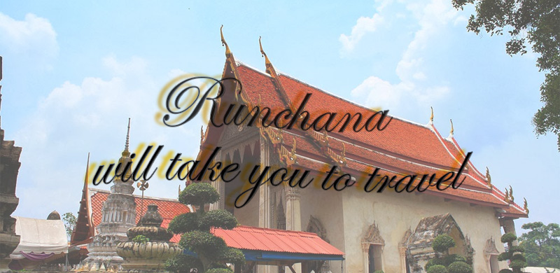
วัดท่าการ้อง ซึ่งสันนิฐานตามพุทธะลักษณะและซากปรักหังพัง น่าจะสร้างขึ้นในสมัยรัชกาลที่ 1 (สมเด็จพระชัยราชา) ประมาณปีพุทธศักราช 2076 หรือ 474 ปี
เศษมาแล้ว เพราะมีท่าน้ำกั้นวัด ช่วงนั้นแผ่นดินค่อนข้างสงบพระพุทธศาสนาเจริญรุ่งเรื่องดี อีกทั้งวัดนี้ยังใช้เป็นที่ประทับพักผ่อน เพื่อเผยแพร่ศาสนาของลัทธิลัง
กาวงศ์อีกด้วย แต่ไม่ปรากฏหลักฐานที่ชัดเจนว่าผู้ใดเป็นผู้สร้าง เพราะอยู่นอกเขตพระบรมมหาราชวัง สันนิฐานว่า คงจะเป็นวัดที่ราษฎรสร้างขึ้น เพราะไม่ปรากฏราย
ชื่อพระอารามหลวงสมัยอยุธยา แต่จากการสังเกตเม็ดมะยมรอบกำแพงพระอุโบสถ จึงสันนิฐานว่าน่าจะมีการบูรณะปฎิสังขรณ์ขึ้นมาใหม่ในสมัยรัตนโกสินทร์ ช่วงรัช
กาลพระนั่งเกล้าเจ้าอยู่หัวและพระจอมเกล้าเจ้าอยู่หัว (รัชกาลที่ 3-5)
เป็นวัดเก่าแก่ตั้งแต่สมัยอยุธยา ตั้งอยู่ริมแม่น้ำเจ้าพระยาทางทิศตะวันตกของเกาะเมืองพระนครศรีอยุธยา ท่ามกลางชุมชนอิสลาม 2 หมู่บ้าน คือ บ้านท่ากับบ้าน
การ้อง อันเป็นวัดพุทธศาสนาที่อยู่ท่ามกลางชุมชนมุสลิม เป็นวัดหนึ่งที่นักท่องเที่ยวนิยมแวะมาสักการะพระพุทธรูปศักดิ์สิทธิ์ นามว่าพระพุทธรัตนมงคลล หรือที่เรียก
กันว่า หลวงพ่อยิ้ม วัดท่าการ้อง ได้ตกแต่งบริเวณวัดให้สวยงามด้วยไม้ดอกไม้ประดับเป็นระเบียบ รวมทั้งมีห้องน้ำที่ตกแต่งสวยงามจนได้รับรางวัลชนะเลิศการประ
กวดสุดยอดส้วมแห่งปีระดับประเทศ ปี 2549 ประเภทวัดและศาสนสถาน
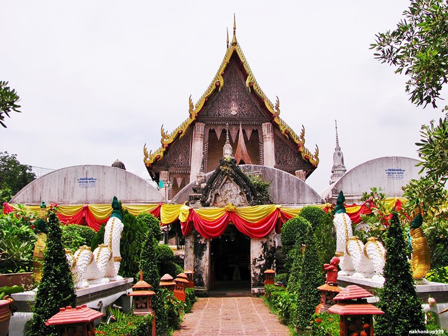
สักการะหลวงพ่อยิ้ม
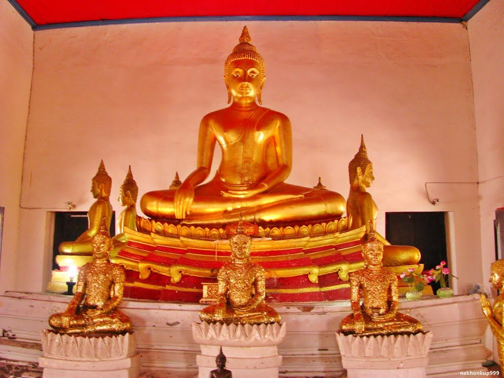
พระอุโบสถ
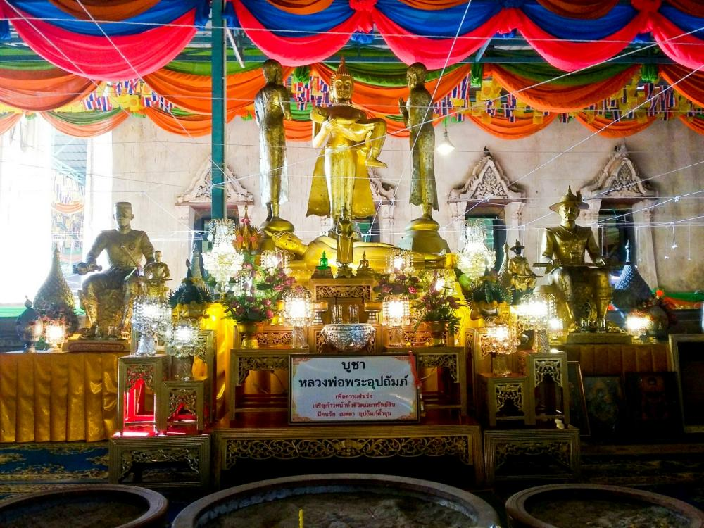
ถ่ายชีวิตสัตว์
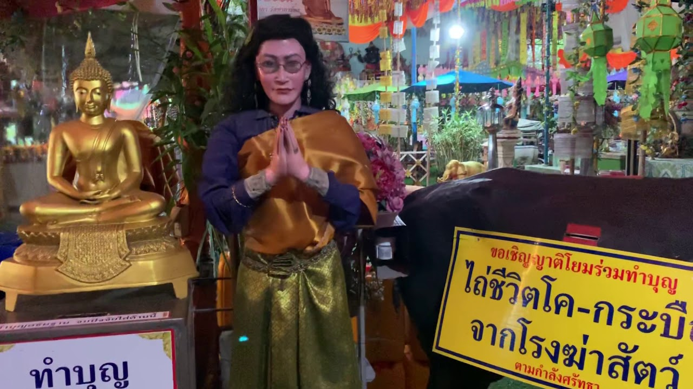
ตลาดน้ำกรุงเก่า
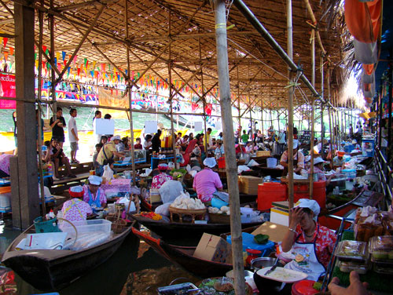
ให้อาหารปลา
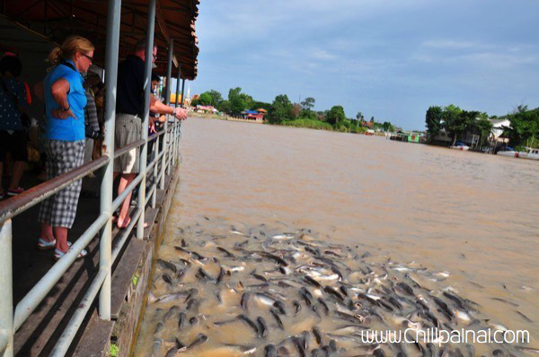
| เวลาทำการ | วันจันจันทร์ - วันอาทิตย์ เปิด 08:00 - 16:00 |
|---|---|
| การเดินทาง | จักรยาน |
| ราคาค่าเข้าชม | ราคาค่าเข้าชม: ไม่มีค่าใช้จ่าย |
| ที่จอดรถ | ที่จอดรถของวัดท่าการ้อง |
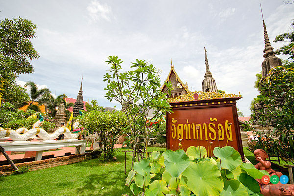 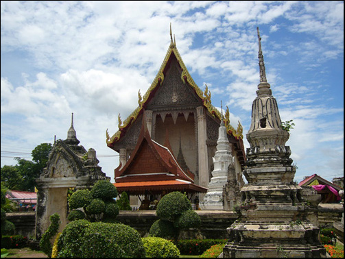
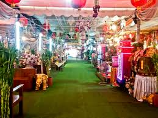 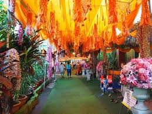
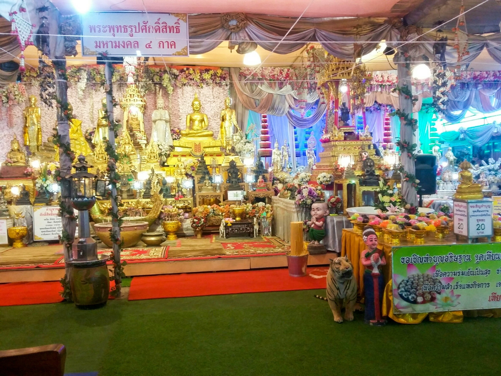 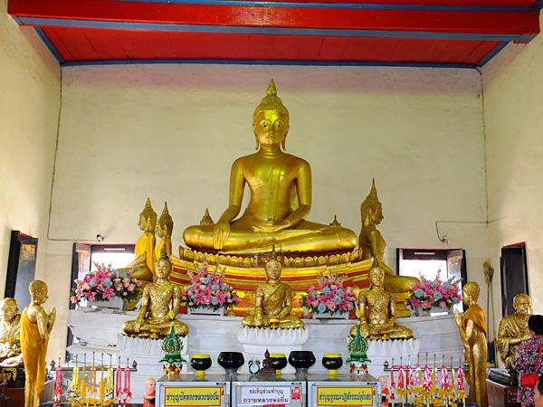 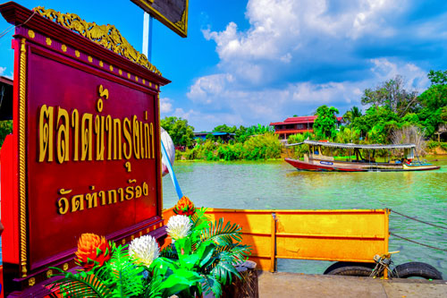